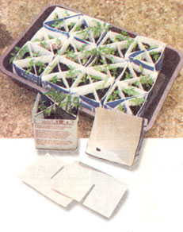

These converted milk cartons are a great improvement over peat pots for tomato plant propagation. The conversion takes a little time, but the plant's roots are easily released without damage. We also use the half-gallon cartons by restapling them and cutting a rectangular opening on one side and a drainage hole on the other. We restrict each container to one variety with lightweight, sterile starting mix.
PAUL COVER
Arden, North Carolina
|
 |
|
|